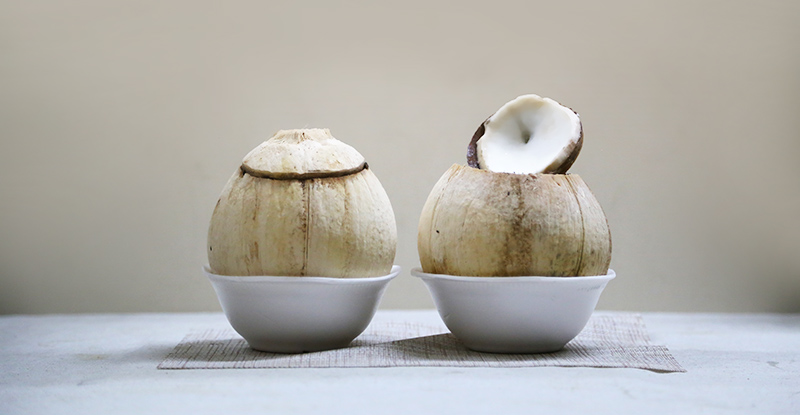

但凡椰子和椰子制品我都爱。椰青，毛椰子，椰汁，椰肉，椰奶，椰子片，椰蓉，椰子粉，椰奶饭，椰汁糕，椰汁鸡，椰汁虾。。。小时候有亲戚在厦门工作，第一次带回来一箱椰树牌椰汁和椰子糖，大概从那时开始我就爱上了椰子。那年头椰汁还是挺奢侈的一种饮料，于是奶奶家我们几个小孩得表现好才有椰汁喝，我总是表现得最好的那个，现在回想起来，小时候读书好，大概也有椰汁做奖品的功劳。每回得到一罐椰汁，我总是一小口一小口地抿，就像父辈们喝酒那样，让椰汁沾满嘴唇，再用舌头绕着嘴唇舔一圈，生怕漏过一滴；椰子糖更是爱不释口，一颗糖可以吃上好久。含在嘴里，先是等待那层薄薄的裹糖纸慢慢变软，和糖汁融化在一起，然后再细细品味焦糖的香味，和更浓郁的椰奶味。对于那个时候的我来讲，椰汁和椰子糖已属天上美味，直到后来去厦门玩，喝到真正的椰汁，才知道原来椰汁是这般清甜，并没有奶味。后来大了，不再爱吃糖了，但对椰子的爱一直没有消减。
来广州数次路过文明路，我常常在百花或明记甜品店要上一份加椰奶的糖水，然后继续往前走，旁边有家炖品店，只卖椰子炖鸡，一整只椰子，开顶上一个小口，放进去竹丝鸡和配料，然后和里面的椰汁一起炖。从我第一次路过，就忍不住要尝试下，只可惜每次去都排很壮观的队，小小一个店铺也常常没有坐的，好不容易排到的食客就干脆把椰子盅放在塑料椅上，躬着腰喝汤。看这情景我就被打败了，虽然想吃，但还是不想花时间排那么久的队。于是每次都在旁边的店解决。旁边一些小餐厅大概也是看见他家这么火，就都开辟了椰子炖鸡这道菜式，换着吃了好几家，味道都还不错，只是竹丝鸡太老，只喝汤就好，椰子鸡汤还是很鲜甜的。
这个端午，再一次逛到文明路，在百花甜品店要了一份椰奶木瓜雪耳糖水。喝完走到那家炖品店，意外发现这次只有几个人在排队，虽然仍旧没有座，于是决定打包带走。于是两个人一人一只椰子盅，怀着满心期待，倒了两次地铁，终于回到家，椰子摸着还是热的，开盖尝上一口，同样的鲜甜，同样有些老的竹丝鸡。汤依然美味，还是我熟悉的椰子清甜，但这样的熟悉和相似又不免有些失望，实在不懂相比别家的门庭冷落，他家为什么有那么多人排队，大概只是饥渴营销的关系吧。看来这椰子炖鸡也不是什么困难的手艺，打算下次买几个椰子自己做做。
